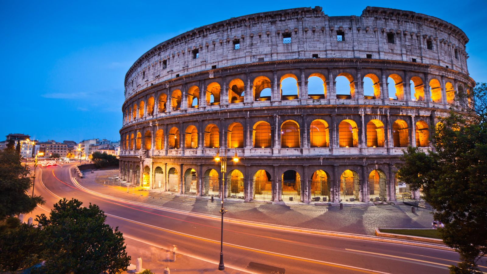

Виконано в рамках лабораторної роботи з веб-розробки
Дата і місце народження: 20 Лютого 2006 року Київ
Освіта: Назва школи — СШ №305 з поглибленим вивченням іноземної мови;
Назва університету(зараз навчаюсь) — Київський політехнічний інститут імені Ігоря Сікорського
Рим — це місто, яке вражає своєю багатовіковою історією та архітектурою. Воно відоме як «Вічне місто», адже існує вже понад дві тисячі років і було центром величезної Римської імперії. Тут можна побачити легендарний Колізей, Пантеон, Римський форум, акведуки та інші пам’ятки, які зберегли дух античності. Атмосфера міста поєднує велич імперської спадщини та сучасний ритм життя: вузькі вулички, затишні кав’ярні, вуличні музиканти й неповторний смак італійської кухні. Особливе місце займає Ватикан — серце католицької церкви та осередок світового мистецтва з Сікстинською капелою і собором Святого Петра. Прогулюючись містом, відчуваєш, як історія оживає в кожній площі, фонтані чи будівлі. Рим — це не просто місто, а музей під відкритим небом, який залишає незабутні враження.
